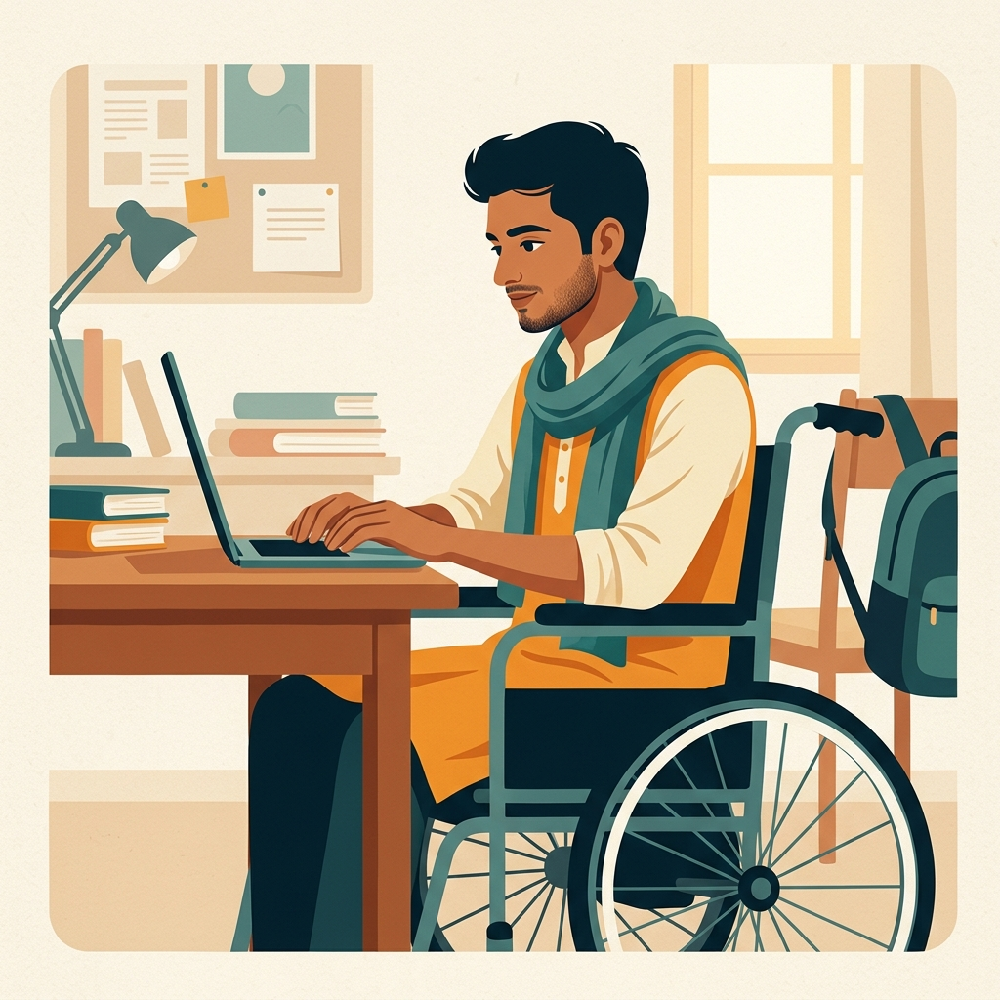
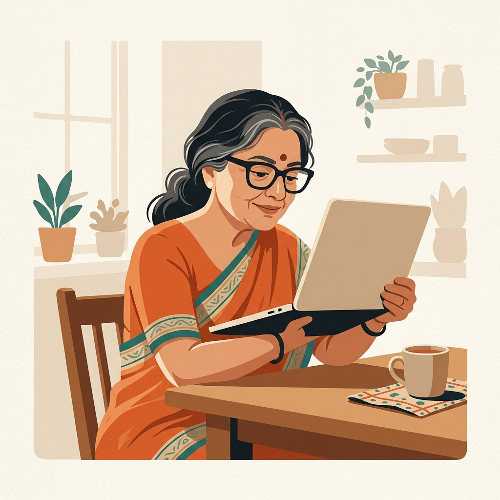

Two people
A laptop is only a laptop if you can
move a mouse
and
see a screen.

Arjun, 22
Engineering student · cerebral palsy
Cannot hold a trackpad steady. Every assignment, portal and chat needs
someone else's hands.

Meena, 58
Shopkeeper · low vision, diabetic retinopathy
Can hear a screen reader list forty buttons.
Cannot see the photo her daughter sent
, or the chart in her bank app.
Composite personas drawn from published accessibility research; illustrations, not real people.
Sahaay
02